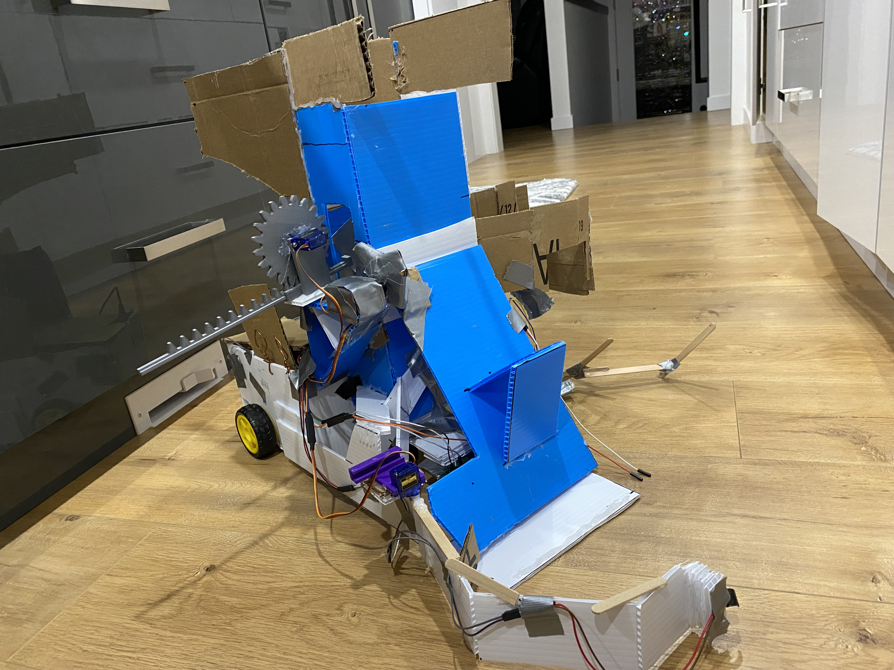
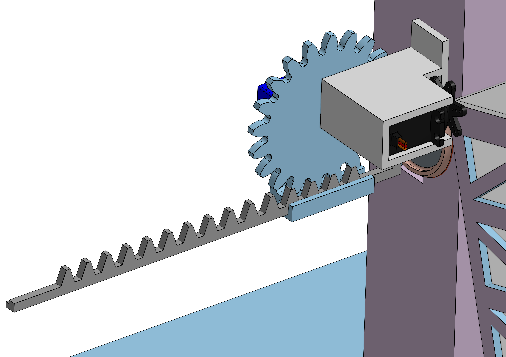
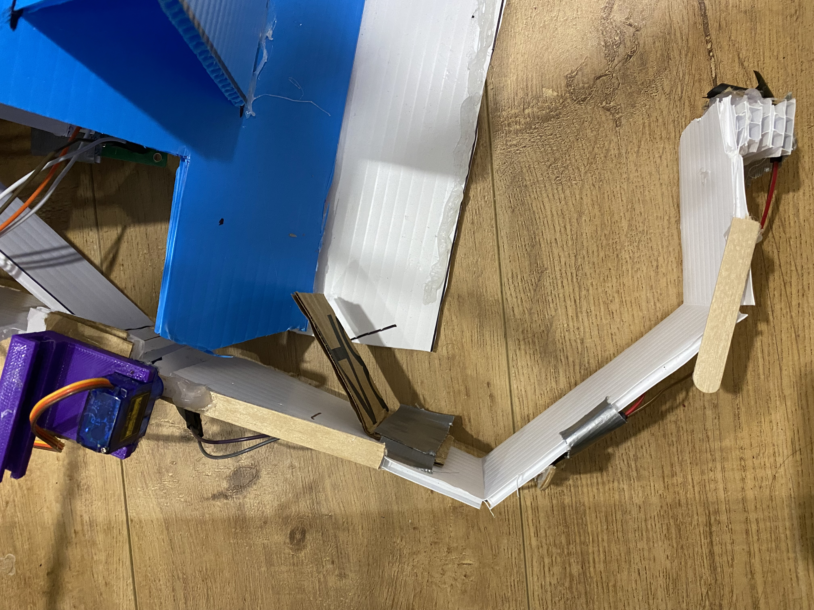
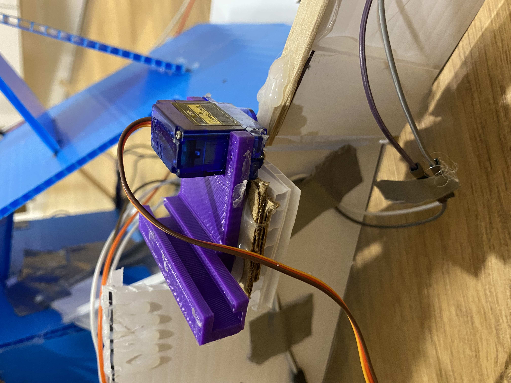

Automated Recovery System Robot
ENPH 253 was the most fun, frustrating, exciting, time-consuming course that I took over the summer of 2021. After a 2 weeks introduction to different circuit components and their functionality, we were assigned the task of manufacturing a fully-functional autonomous can-collecting robot. We were divided into teams of four and since the summer of 2021 was online, we were expected to construct not one but four, yes 4, fully-functional robots within 3 weeks. This process required careful mediation and delegation of tasks, meeting tight-deadlines, working in a team under stressful conditions, and of course--making 4 robots!
I will present us with a general overview of the design process and dive briefly into technical details about the different components of the robot.
Overview
Following were the main constraints and requirements for the robot:
- The robot was responsible to pick-up 6 cans placed randomly along an 8" by 8" tape path.
- After collection, it had to deposit the cans in an upright position in a cardboard silo. Cans placed in any other orientation were awarded zero points.
- Traversing along the tape-path, collecting, and depositing the cans had to be accomplished in under 1 minute.
- There was an optional skycrane component where the robot had to be lowered by a skycrane before it started can-collection. The time required to lower the robot from the skycrane was included in the 1 minute constraint.
- The robot was restricted to a maximum 24" dimension in all directions at all times.
Now let's take a look at how my team and I accomplished this task and what we learned throughout the process.
Mechanical Components
We began our design process by brainstorming and prototyping 4 different designs. Ultimately, we had to discard most of them since they either required too much power or did not fit the dimensional constraints. Following is a sketch of the design that we decided upon for the robot.
Some of the features that made us choose this model instead of the others were:
- It incorporated storage area for 3 cans.
- The collection of the can using the ramp required a single servo motor.
- The disposal of the cans could also be accomplished using a single SG90 micro servo and a rack-and-pinion piston.
After ensuring that the robot met the constraints and accomplished the task using the components that we had, we prototyped a CAD model of the design in OnShape, the screenshot for which is included below. I have included the left, right, and top view of the model as well in order to better show the most prominent features.
As you can see in the image below, we made some changes from the sketch--including adding a wedge on the ramp to ensure that the can rolled into the storage container and did not fly out as the ramp rotated up. The image also shows the servo placements for the ramp and the sweeper arm.
We will discuss the two main components of the mechanical model in further detail. These two components are:
- Rack-and-Pinion Piston: This piston was designed
to convert the rotational motion of the servo into a linear motion that could
eject the can out the pocket on the right side. The gear of the piston had 20 teeth
and it's diameter was 8cm.
 - The Sweeper Arm: Figuring out the configuration for this arm
was crucial since it was responsible for collecting the detected cans. After prototyping,
analyzing, and re-iterating this process several times, we found the "perfect" configuration.
The arm had to be bent at certain points as shown as this would result in a scoop shape which helps
in easier collection of cans. After experimenting with the design,
we also realized that the arm had to be offset from the robot body
otherwise it would be required to rotate upwards with the ramp.
The final arm orientation with the SG90 micro servo placement is shown below.
 
Electrical Components
The most crucial and the circuit that required a week worth of debugging was the h-bridge circuit. We decided to solder all of our electrical components which, to our dismay, induced some unexpected issues. Every time we constructed an h-bridge circuit on a breadboard it worked fine but the moment we soldered the components, it would stop working. The main reason why we kept running into this issue was the prescence of burnt MOSFETs in our circuit. Therefore, after countless hours spent soldering in our living rooms (yes, this is where soldering summer originated from!), we would have to spent numerous more hours debugging the circuit, checking every single MOSFET, de-soldering, and iterating the cycle over and over until we finally had two working h-bridges for each robot.
The pre-liminary circuitry of the robot looked as shown in the picture below but as we added more components and more circuits, this soon became a spaghetti-mess of wires.
The circuit in the protoboard is the power adaptor circuit that we built in order to convert the 12V from the battery to 3.3V for the bluepill and 5V for DC motors. We decided to keep this circuit in the protoboard as the weight distribution of the robot allowed this and this would also prevent any issues occuring from soldering and burning components. This circuit also contributed some noise in the overall circuit and to resolve this issue we added capacitors in the power rails of the protoboard.
Let's talk very briefly about the bluepill circuitry. We were provided with a STM32 bluepill, which despite being a very powerful chip, had limited number of pins. Therefore, in order to ensure that we were using all the pins wisely, we constructed a pinout diagram for the bluepill, which is shown below.
We also constructed a circuit diagram with all the necessary circuit components to ensure proper distribution of voltage and power among components. The image of the same is shown below. Both the images are taken from our design proposal that we presented to the instructors before we commenced the manufacturing process of the robot.
Another crucial circuit was the IR-sensor circuit. In order to tape follow, we decided to use IR sensors to detect the prescence of the black tape-path. We created an array of 5 IR sensors which outputted a value of 0 or 1 depending on whether the tape was underneath the sensor or not. The result of this reading, which was discrete in nature, was an array representing the position of the sensors with respect to the black tape. This enabled us to employ differential steering to keep the robot on track. As shown in the picture below, we used black tape to shield the sensors from each other and prevent any resulting noise.
PID
After constructing the above circuits and manufacturing the robot, we had to tune the PID to enable the robot to line follow. This required a lot of trial and error with some guided experimentation. We experimented with the P value first and turned off D and I. P value was increased until the robot reached a point of minimal oscillations. To dampen the resulting oscillations, we then added the D term and increased it until there were no further oscillations. In our robot design, we ended up not using an I term at all and the P and D terms sufficied.
Integration
Almost there!
To make the entire system work as a whole, a lot of tweaking was done few days before the competition. I have included the links to some videos below which show the progression of the robot from a stupid machine to an autonomous recovery system robot!
- Can collection sequence.
- Tuning the PID ft. a very excited hey! when the robot turned at a convoluted turn.
- And finally, the perfect run!
The competition day video can be found here.
Final Remarks
Overall, this project was a great learning experience since I developed core engineering skills which I did not have before. No matter how frustrating soldering and de-soldering was, seeing the final circuit work brought joy every time without a fail. Throughout this design process I learnt a lot about teamwork, how to come up with creative solutions quickly, and most importantly how to solve mechanical and electrical problems. One big takeaway from this project is the problem-solving skills that we all developed which allowed us to go from engineering students learning about transistors to engineering students who manufactured a fully functional autonomous robot! Check out the github below to take a look at our final code.
GitHub